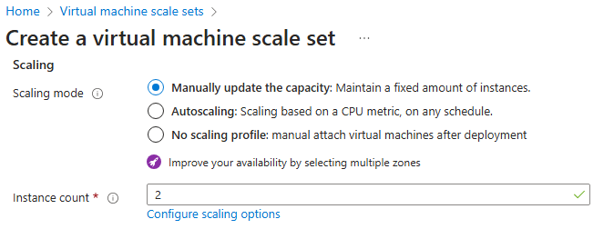
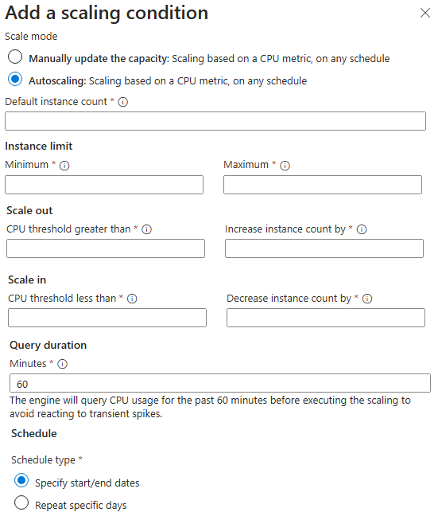

When you create an Azure Virtual Machine Scale Sets implementation in the Azure portal, you can enable manual or autoscaling. For optimal performance, you should define a minimum, maximum, and default number of virtual machine instances to use.
In the Azure portal, you can select the scaling mode.

Scaling mode
-
Manually update the capacity : You can manually update the capacity and maintain a fixed instances count. Set the Instance count to the number of virtual machines in the scale set (0 - 1000). Configure the Scale-in policy which is the order virtual machines are selected for deletion. For example, you could balance across zones and then delete the virtual machine with the highest instance ID.
-
Autoscaling : You can autoscale the capacity on any schedule, based on any metrics. Specify the maximum number of virtual machines that can be available when autoscaling is applied on your implementation.
Configure autoscaling
Autoscaling is based on a scaling condition.

-
Default instance count. The initial number of virtual machines deployed in this scale set (0-1000).
-
Instance limit. The minimum instance count you want this condition to scale down to. The maximum instance count you want this condition to scale up to.
-
Scale out. The CPU usage percentage threshold for triggering the scale-out autoscale rule. The number of instances to scale out by.
-
Scale in. The CPU usage percentage threshold for triggering the scale-in autoscale rule. The number of instances to scale in by.
-
Query duration : This duration is the time the Autoscale engine looks back for the metric usage average. This look back is to allow your metric to stabilize.
-
Schedule : Specify the start and end dates. You can also repeat the schedule on specific days.